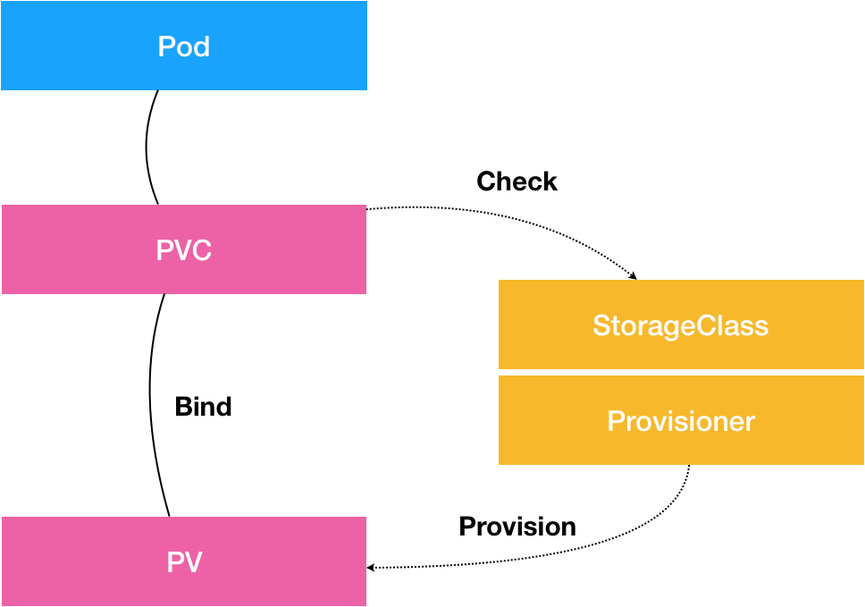

- 00 开篇词 打通“容器技术”的任督二脉.md.html
- 01 预习篇 · 小鲸鱼大事记（一）：初出茅庐.md.html
- 02 预习篇 · 小鲸鱼大事记（二）：崭露头角.md.html
- 03 预习篇 · 小鲸鱼大事记（三）：群雄并起.md.html
- 04 预习篇 · 小鲸鱼大事记（四）：尘埃落定.md.html
- 05 白话容器基础（一）：从进程说开去.md.html
- 06 白话容器基础（二）：隔离与限制.md.html
- 07 白话容器基础（三）：深入理解容器镜像.md.html
- 08 白话容器基础（四）：重新认识Docker容器.md.html
- 09 从容器到容器云：谈谈Kubernetes的本质.md.html
- 10 Kubernetes一键部署利器：kubeadm.md.html
- 11 从0到1：搭建一个完整的Kubernetes集群.md.html
- 12 牛刀小试：我的第一个容器化应用.md.html
- 13 为什么我们需要Pod？.md.html
- 14 深入解析Pod对象（一）：基本概念.md.html
- 15 深入解析Pod对象（二）：使用进阶.md.html
- 16 编排其实很简单：谈谈“控制器”模型.md.html
- 17 经典PaaS的记忆：作业副本与水平扩展.md.html
- 18 深入理解StatefulSet（一）：拓扑状态.md.html
- 19 深入理解StatefulSet（二）：存储状态.md.html
- 20 深入理解StatefulSet（三）：有状态应用实践.md.html
- 21 容器化守护进程的意义：DaemonSet.md.html
- 22 撬动离线业务：Job与CronJob.md.html
- 23 声明式API与Kubernetes编程范式.md.html
- 24 深入解析声明式API（一）：API对象的奥秘.md.html
- 25 深入解析声明式API（二）：编写自定义控制器.md.html
- 26 基于角色的权限控制：RBAC.md.html
- 27 聪明的微创新：Operator工作原理解读.md.html
- 28 PV、PVC、StorageClass，这些到底在说啥？.md.html
- 29 PV、PVC体系是不是多此一举？从本地持久化卷谈起.md.html
- 30 编写自己的存储插件：FlexVolume与CSI.md.html
- 31 容器存储实践：CSI插件编写指南.md.html
- 32 浅谈容器网络.md.html
- 33 深入解析容器跨主机网络.md.html
- 34 Kubernetes网络模型与CNI网络插件.md.html
- 35 解读Kubernetes三层网络方案.md.html
- 36 为什么说Kubernetes只有soft multi-tenancy？.md.html
- 37 找到容器不容易：Service、DNS与服务发现.md.html
- 38 从外界连通Service与Service调试“三板斧”.md.html
- 39 谈谈Service与Ingress.md.html
- 40 Kubernetes的资源模型与资源管理.md.html
- 41 十字路口上的Kubernetes默认调度器.md.html
- 42 Kubernetes默认调度器调度策略解析.md.html
- 43 Kubernetes默认调度器的优先级与抢占机制.md.html
- 44 Kubernetes GPU管理与Device Plugin机制.md.html
- 45 幕后英雄：SIG-Node与CRI.md.html
- 46 解读 CRI 与 容器运行时.md.html
- 47 绝不仅仅是安全：Kata Containers 与 gVisor.md.html
- 48 Prometheus、Metrics Server与Kubernetes监控体系.md.html
- 49 Custom Metrics_ 让Auto Scaling不再“食之无味”.md.html
- 50 让日志无处可逃：容器日志收集与管理.md.html
- 51 谈谈Kubernetes开源社区和未来走向.md.html
- 52 答疑：在问题中解决问题，在思考中产生思考.md.html
- 特别放送 2019 年，容器技术生态会发生些什么？.md.html
- 特别放送 基于 Kubernetes 的云原生应用管理，到底应该怎么做？.md.html
- 结束语 Kubernetes：赢开发者赢天下.md.html
- 捐赠
28 PV、PVC、StorageClass，这些到底在说啥？
你好，我是张磊。今天我和你分享的主题是：PV、PVC、StorageClass，这些到底在说啥？
在前面的文章中，我重点为你分析了Kubernetes的各种编排能力。
在这些讲解中，你应该已经发现，容器化一个应用比较麻烦的地方，莫过于对其“状态”的管理。而最常见的“状态”，又莫过于存储状态了。
所以，从今天这篇文章开始，我会通过4篇文章为你剖析Kubernetes项目处理容器持久化存储的核心原理，从而帮助你更好地理解和使用这部分内容。
首先，我们来回忆一下我在第19篇文章《深入理解StatefulSet（二）：存储状态》中，和你分享StatefulSet如何管理存储状态的时候，介绍过的Persistent Volume（PV）和Persistent Volume Claim（PVC）这套持久化存储体系。
其中，PV描述的，是持久化存储数据卷。这个API对象主要定义的是一个持久化存储在宿主机上的目录，比如一个NFS的挂载目录。
通常情况下，PV对象是由运维人员事先创建在Kubernetes集群里待用的。比如，运维人员可以定义这样一个NFS类型的PV，如下所示：
apiVersion: v1
kind: PersistentVolume
metadata:
name: nfs
spec:
storageClassName: manual
capacity:
storage: 1Gi
accessModes:
- ReadWriteMany
nfs:
server: 10.244.1.4
path: "/"
而PVC描述的，则是Pod所希望使用的持久化存储的属性。比如，Volume存储的大小、可读写权限等等。
PVC对象通常由开发人员创建；或者以PVC模板的方式成为StatefulSet的一部分，然后由StatefulSet控制器负责创建带编号的PVC。
比如，开发人员可以声明一个1 GiB大小的PVC，如下所示：
apiVersion: v1
kind: PersistentVolumeClaim
metadata:
name: nfs
spec:
accessModes:
- ReadWriteMany
storageClassName: manual
resources:
requests:
storage: 1Gi
而用户创建的PVC要真正被容器使用起来，就必须先和某个符合条件的PV进行绑定。这里要检查的条件，包括两部分：
- 第一个条件，当然是PV和PVC的spec字段。比如，PV的存储（storage）大小，就必须满足PVC的要求。
- 而第二个条件，则是PV和PVC的storageClassName字段必须一样。这个机制我会在本篇文章的最后一部分专门介绍。
在成功地将PVC和PV进行绑定之后，Pod就能够像使用hostPath等常规类型的Volume一样，在自己的YAML文件里声明使用这个PVC了，如下所示：
apiVersion: v1
kind: Pod
metadata:
labels:
role: web-frontend
spec:
containers:
- name: web
image: nginx
ports:
- name: web
containerPort: 80
volumeMounts:
- name: nfs
mountPath: "/usr/share/nginx/html"
volumes:
- name: nfs
persistentVolumeClaim:
claimName: nfs
可以看到，Pod需要做的，就是在volumes字段里声明自己要使用的PVC名字。接下来，等这个Pod创建之后，kubelet就会把这个PVC所对应的PV，也就是一个NFS类型的Volume，挂载在这个Pod容器内的目录上。
不难看出，PVC和PV的设计，其实跟“面向对象”的思想完全一致。
PVC可以理解为持久化存储的“接口”，它提供了对某种持久化存储的描述，但不提供具体的实现；而这个持久化存储的实现部分则由PV负责完成。
这样做的好处是，作为应用开发者，我们只需要跟PVC这个“接口”打交道，而不必关心具体的实现是NFS还是Ceph。毕竟这些存储相关的知识太专业了，应该交给专业的人去做。
而在上面的讲述中，其实还有一个比较棘手的情况。
比如，你在创建Pod的时候，系统里并没有合适的PV跟它定义的PVC绑定，也就是说此时容器想要使用的Volume不存在。这时候，Pod的启动就会报错。
但是，过了一会儿，运维人员也发现了这个情况，所以他赶紧创建了一个对应的PV。这时候，我们当然希望Kubernetes能够再次完成PVC和PV的绑定操作，从而启动Pod。
所以在Kubernetes中，实际上存在着一个专门处理持久化存储的控制器，叫作Volume Controller。这个Volume Controller维护着多个控制循环，其中有一个循环，扮演的就是撮合PV和PVC的“红娘”的角色。它的名字叫作PersistentVolumeController。
PersistentVolumeController会不断地查看当前每一个PVC，是不是已经处于Bound（已绑定）状态。如果不是，那它就会遍历所有的、可用的PV，并尝试将其与这个“单身”的PVC进行绑定。这样，Kubernetes就可以保证用户提交的每一个PVC，只要有合适的PV出现，它就能够很快进入绑定状态，从而结束“单身”之旅。
而所谓将一个PV与PVC进行“绑定”，其实就是将这个PV对象的名字，填在了PVC对象的spec.volumeName字段上。所以，接下来Kubernetes只要获取到这个PVC对象，就一定能够找到它所绑定的PV。
那么，这个PV对象，又是如何变成容器里的一个持久化存储的呢？
我在前面讲解容器基础的时候，已经为你详细剖析了容器Volume的挂载机制。用一句话总结，所谓容器的Volume，其实就是将一个宿主机上的目录，跟一个容器里的目录绑定挂载在了一起。（你可以借此机会，再回顾一下专栏的第8篇文章《白话容器基础（四）：重新认识Docker容器》中的相关内容）
而所谓的“持久化Volume”，指的就是这个宿主机上的目录，具备“持久性”。即：这个目录里面的内容，既不会因为容器的删除而被清理掉，也不会跟当前的宿主机绑定。这样，当容器被重启或者在其他节点上重建出来之后，它仍然能够通过挂载这个Volume，访问到这些内容。
显然，我们前面使用的hostPath和emptyDir类型的Volume并不具备这个特征：它们既有可能被kubelet清理掉，也不能被“迁移”到其他节点上。
所以，大多数情况下，持久化Volume的实现，往往依赖于一个远程存储服务，比如：远程文件存储（比如，NFS、GlusterFS）、远程块存储（比如，公有云提供的远程磁盘）等等。
而Kubernetes需要做的工作，就是使用这些存储服务，来为容器准备一个持久化的宿主机目录，以供将来进行绑定挂载时使用。而所谓“持久化”，指的是容器在这个目录里写入的文件，都会保存在远程存储中，从而使得这个目录具备了“持久性”。
这个准备“持久化”宿主机目录的过程，我们可以形象地称为“两阶段处理”。
接下来，我通过一个具体的例子为你说明。
当一个Pod调度到一个节点上之后，kubelet就要负责为这个Pod创建它的Volume目录。默认情况下，kubelet为Volume创建的目录是如下所示的一个宿主机上的路径：
/var/lib/kubelet/pods/<Pod的ID>/volumes/kubernetes.io~<Volume类型>/<Volume名字>
接下来，kubelet要做的操作就取决于你的Volume类型了。
如果你的Volume类型是远程块存储，比如Google Cloud的Persistent Disk（GCE提供的远程磁盘服务），那么kubelet就需要先调用Goolge Cloud的API，将它所提供的Persistent Disk挂载到Pod所在的宿主机上。
备注：你如果不太了解块存储的话，可以直接把它理解为：一块磁盘。
这相当于执行：
$ gcloud compute instances attach-disk <虚拟机名字> --disk <远程磁盘名字>
这一步为虚拟机挂载远程磁盘的操作，对应的正是“两阶段处理”的第一阶段。在Kubernetes中，我们把这个阶段称为Attach。
Attach阶段完成后，为了能够使用这个远程磁盘，kubelet还要进行第二个操作，即：格式化这个磁盘设备，然后将它挂载到宿主机指定的挂载点上。不难理解，这个挂载点，正是我在前面反复提到的Volume的宿主机目录。所以，这一步相当于执行：
# 通过lsblk命令获取磁盘设备ID
$ sudo lsblk
# 格式化成ext4格式
$ sudo mkfs.ext4 -m 0 -F -E lazy_itable_init=0,lazy_journal_init=0,discard /dev/<磁盘设备ID>
# 挂载到挂载点
$ sudo mkdir -p /var/lib/kubelet/pods/<Pod的ID>/volumes/kubernetes.io~<Volume类型>/<Volume名字>
这个将磁盘设备格式化并挂载到Volume宿主机目录的操作，对应的正是“两阶段处理”的第二个阶段，我们一般称为：Mount。
Mount阶段完成后，这个Volume的宿主机目录就是一个“持久化”的目录了，容器在它里面写入的内容，会保存在Google Cloud的远程磁盘中。
而如果你的Volume类型是远程文件存储（比如NFS）的话，kubelet的处理过程就会更简单一些。
因为在这种情况下，kubelet可以跳过“第一阶段”（Attach）的操作，这是因为一般来说，远程文件存储并没有一个“存储设备”需要挂载在宿主机上。
所以，kubelet会直接从“第二阶段”（Mount）开始准备宿主机上的Volume目录。
在这一步，kubelet需要作为client，将远端NFS服务器的目录（比如：“/”目录），挂载到Volume的宿主机目录上，即相当于执行如下所示的命令：
$ mount -t nfs <NFS服务器地址>:/ /var/lib/kubelet/pods/<Pod的ID>/volumes/kubernetes.io~<Volume类型>/<Volume名字>
通过这个挂载操作，Volume的宿主机目录就成为了一个远程NFS目录的挂载点，后面你在这个目录里写入的所有文件，都会被保存在远程NFS服务器上。所以，我们也就完成了对这个Volume宿主机目录的“持久化”。
到这里，你可能会有疑问，Kubernetes又是如何定义和区分这两个阶段的呢？
其实很简单，在具体的Volume插件的实现接口上，Kubernetes分别给这两个阶段提供了两种不同的参数列表：
- 对于“第一阶段”（Attach），Kubernetes提供的可用参数是nodeName，即宿主机的名字。
- 而对于“第二阶段”（Mount），Kubernetes提供的可用参数是dir，即Volume的宿主机目录。
所以，作为一个存储插件，你只需要根据自己的需求进行选择和实现即可。在后面关于编写存储插件的文章中，我会对这个过程做深入讲解。
而经过了“两阶段处理”，我们就得到了一个“持久化”的Volume宿主机目录。所以，接下来，kubelet只要把这个Volume目录通过CRI里的Mounts参数，传递给Docker，然后就可以为Pod里的容器挂载这个“持久化”的Volume了。其实，这一步相当于执行了如下所示的命令：
$ docker run -v /var/lib/kubelet/pods/<Pod的ID>/volumes/kubernetes.io~<Volume类型>/<Volume名字>:/<容器内的目标目录> 我的镜像 ...
以上，就是Kubernetes处理PV的具体原理了。
备注：对应地，在删除一个PV的时候，Kubernetes也需要Unmount和Dettach两个阶段来处理。这个过程我就不再详细介绍了，执行“反向操作”即可。
实际上，你可能已经发现，这个PV的处理流程似乎跟Pod以及容器的启动流程没有太多的耦合，只要kubelet在向Docker发起CRI请求之前，确保“持久化”的宿主机目录已经处理完毕即可。
所以，在Kubernetes中，上述关于PV的“两阶段处理”流程，是靠独立于kubelet主控制循环（Kubelet Sync Loop）之外的两个控制循环来实现的。
其中，“第一阶段”的Attach（以及Dettach）操作，是由Volume Controller负责维护的，这个控制循环的名字叫作：AttachDetachController。而它的作用，就是不断地检查每一个Pod对应的PV，和这个Pod所在宿主机之间挂载情况。从而决定，是否需要对这个PV进行Attach（或者Dettach）操作。
需要注意，作为一个Kubernetes内置的控制器，Volume Controller自然是kube-controller-manager的一部分。所以，AttachDetachController也一定是运行在Master节点上的。当然，Attach操作只需要调用公有云或者具体存储项目的API，并不需要在具体的宿主机上执行操作，所以这个设计没有任何问题。
而“第二阶段”的Mount（以及Unmount）操作，必须发生在Pod对应的宿主机上，所以它必须是kubelet组件的一部分。这个控制循环的名字，叫作：VolumeManagerReconciler，它运行起来之后，是一个独立于kubelet主循环的Goroutine。
通过这样将Volume的处理同kubelet的主循环解耦，Kubernetes就避免了这些耗时的远程挂载操作拖慢kubelet的主控制循环，进而导致Pod的创建效率大幅下降的问题。实际上，kubelet的一个主要设计原则，就是它的主控制循环绝对不可以被block。这个思想，我在后续的讲述容器运行时的时候还会提到。
在了解了Kubernetes的Volume处理机制之后，我再来为你介绍这个体系里最后一个重要概念：StorageClass。
我在前面介绍PV和PVC的时候，曾经提到过，PV这个对象的创建，是由运维人员完成的。但是，在大规模的生产环境里，这其实是一个非常麻烦的工作。
这是因为，一个大规模的Kubernetes集群里很可能有成千上万个PVC，这就意味着运维人员必须得事先创建出成千上万个PV。更麻烦的是，随着新的PVC不断被提交，运维人员就不得不继续添加新的、能满足条件的PV，否则新的Pod就会因为PVC绑定不到PV而失败。在实际操作中，这几乎没办法靠人工做到。
所以，Kubernetes为我们提供了一套可以自动创建PV的机制，即：Dynamic Provisioning。
相比之下，前面人工管理PV的方式就叫作Static Provisioning。
Dynamic Provisioning机制工作的核心，在于一个名叫StorageClass的API对象。
而StorageClass对象的作用，其实就是创建PV的模板。
具体地说，StorageClass对象会定义如下两个部分内容：
- 第一，PV的属性。比如，存储类型、Volume的大小等等。
- 第二，创建这种PV需要用到的存储插件。比如，Ceph等等。
有了这样两个信息之后，Kubernetes就能够根据用户提交的PVC，找到一个对应的StorageClass了。然后，Kubernetes就会调用该StorageClass声明的存储插件，创建出需要的PV。
举个例子，假如我们的Volume的类型是GCE的Persistent Disk的话，运维人员就需要定义一个如下所示的StorageClass：
apiVersion: storage.k8s.io/v1
kind: StorageClass
metadata:
name: block-service
provisioner: kubernetes.io/gce-pd
parameters:
type: pd-ssd
在这个YAML文件里，我们定义了一个名叫block-service的StorageClass。
这个StorageClass的provisioner字段的值是：kubernetes.io/gce-pd，这正是Kubernetes内置的GCE PD存储插件的名字。
而这个StorageClass的parameters字段，就是PV的参数。比如：上面例子里的type=pd-ssd，指的是这个PV的类型是“SSD格式的GCE远程磁盘”。
需要注意的是，由于需要使用GCE Persistent Disk，上面这个例子只有在GCE提供的Kubernetes服务里才能实践。如果你想使用我们之前部署在本地的Kubernetes集群以及Rook存储服务的话，你的StorageClass需要使用如下所示的YAML文件来定义：
apiVersion: ceph.rook.io/v1beta1
kind: Pool
metadata:
name: replicapool
namespace: rook-ceph
spec:
replicated:
size: 3
---
apiVersion: storage.k8s.io/v1
kind: StorageClass
metadata:
name: block-service
provisioner: ceph.rook.io/block
parameters:
pool: replicapool
#The value of "clusterNamespace" MUST be the same as the one in which your rook cluster exist
clusterNamespace: rook-ceph
在这个YAML文件中，我们定义的还是一个名叫block-service的StorageClass，只不过它声明使的存储插件是由Rook项目。
有了StorageClass的YAML文件之后，运维人员就可以在Kubernetes里创建这个StorageClass了：
$ kubectl create -f sc.yaml
这时候，作为应用开发者，我们只需要在PVC里指定要使用的StorageClass名字即可，如下所示：
apiVersion: v1
kind: PersistentVolumeClaim
metadata:
name: claim1
spec:
accessModes:
- ReadWriteOnce
storageClassName: block-service
resources:
requests:
storage: 30Gi
可以看到，我们在这个PVC里添加了一个叫作storageClassName的字段，用于指定该PVC所要使用的StorageClass的名字是：block-service。
以Google Cloud为例。
当我们通过kubectl create创建上述PVC对象之后，Kubernetes就会调用Google Cloud的API，创建出一块SSD格式的Persistent Disk。然后，再使用这个Persistent Disk的信息，自动创建出一个对应的PV对象。
我们可以一起来实践一下这个过程（如果使用Rook的话下面的流程也是一样的，只不过Rook创建出的是Ceph类型的PV）：
$ kubectl create -f pvc.yaml
可以看到，我们创建的PVC会绑定一个Kubernetes自动创建的PV，如下所示：
$ kubectl describe pvc claim1
Name: claim1
Namespace: default
StorageClass: block-service
Status: Bound
Volume: pvc-e5578707-c626-11e6-baf6-08002729a32b
Labels: <none>
Capacity: 30Gi
Access Modes: RWO
No Events.
而且，通过查看这个自动创建的PV的属性，你就可以看到它跟我们在PVC里声明的存储的属性是一致的，如下所示：
$ kubectl describe pv pvc-e5578707-c626-11e6-baf6-08002729a32b
Name: pvc-e5578707-c626-11e6-baf6-08002729a32b
Labels: <none>
StorageClass: block-service
Status: Bound
Claim: default/claim1
Reclaim Policy: Delete
Access Modes: RWO
Capacity: 30Gi
...
No events.
此外，你还可以看到，这个自动创建出来的PV的StorageClass字段的值，也是block-service。这是因为，Kubernetes只会将StorageClass相同的PVC和PV绑定起来。
有了Dynamic Provisioning机制，运维人员只需要在Kubernetes集群里创建出数量有限的StorageClass对象就可以了。这就好比，运维人员在Kubernetes集群里创建出了各种各样的PV模板。这时候，当开发人员提交了包含StorageClass字段的PVC之后，Kubernetes就会根据这个StorageClass创建出对应的PV。
Kubernetes的官方文档里已经列出了默认支持Dynamic Provisioning的内置存储插件。而对于不在文档里的插件，比如NFS，或者其他非内置存储插件，你其实可以通过kubernetes-incubator/external-storage这个库来自己编写一个外部插件完成这个工作。像我们之前部署的Rook，已经内置了external-storage的实现，所以Rook是完全支持Dynamic Provisioning特性的。
需要注意的是，StorageClass并不是专门为了Dynamic Provisioning而设计的。
比如，在本篇一开始的例子里，我在PV和PVC里都声明了storageClassName=manual。而我的集群里，实际上并没有一个名叫manual的StorageClass对象。这完全没有问题，这个时候Kubernetes进行的是Static Provisioning，但在做绑定决策的时候，它依然会考虑PV和PVC的StorageClass定义。
而这么做的好处也很明显：这个PVC和PV的绑定关系，就完全在我自己的掌控之中。
这里，你可能会有疑问，我在之前讲解StatefulSet存储状态的例子时，好像并没有声明StorageClass啊？
实际上，如果你的集群已经开启了名叫DefaultStorageClass的Admission Plugin，它就会为PVC和PV自动添加一个默认的StorageClass；否则，PVC的storageClassName的值就是“”，这也意味着它只能够跟storageClassName也是“”的PV进行绑定。
总结
在今天的分享中，我为你详细解释了PVC和PV的设计与实现原理，并为你阐述了StorageClass到底是干什么用的。这些概念之间的关系，可以用如下所示的一幅示意图描述：
- 从图中我们可以看到，在这个体系中：
PVC描述的，是Pod想要使用的持久化存储的属性，比如存储的大小、读写权限等。
PV描述的，则是一个具体的Volume的属性，比如Volume的类型、挂载目录、远程存储服务器地址等。
而StorageClass的作用，则是充当PV的模板。并且，只有同属于一个StorageClass的PV和PVC，才可以绑定在一起。
当然，StorageClass的另一个重要作用，是指定PV的Provisioner（存储插件）。这时候，如果你的存储插件支持Dynamic Provisioning的话，Kubernetes就可以自动为你创建PV了。
基于上述讲述，为了统一概念和方便叙述，在本专栏中，我以后凡是提到“Volume”，指的就是一个远程存储服务挂载在宿主机上的持久化目录；而“PV”，指的是这个Volume在Kubernetes里的API对象。
需要注意的是，这套容器持久化存储体系，完全是Kubernetes项目自己负责管理的，并不依赖于docker volume命令和Docker的存储插件。当然，这套体系本身就比docker volume命令的诞生时间还要早得多。
思考题
在了解了PV、PVC的设计和实现原理之后，你是否依然觉得它有“过度设计”的嫌疑？或者，你是否有更加简单、足以解决你90%需求的Volume的用法？
感谢你的收听，欢迎你给我留言，也欢迎分享给更多的朋友一起阅读。
© 2019 - 2023 Liangliang Lee. Powered by gin and hexo-theme-book.